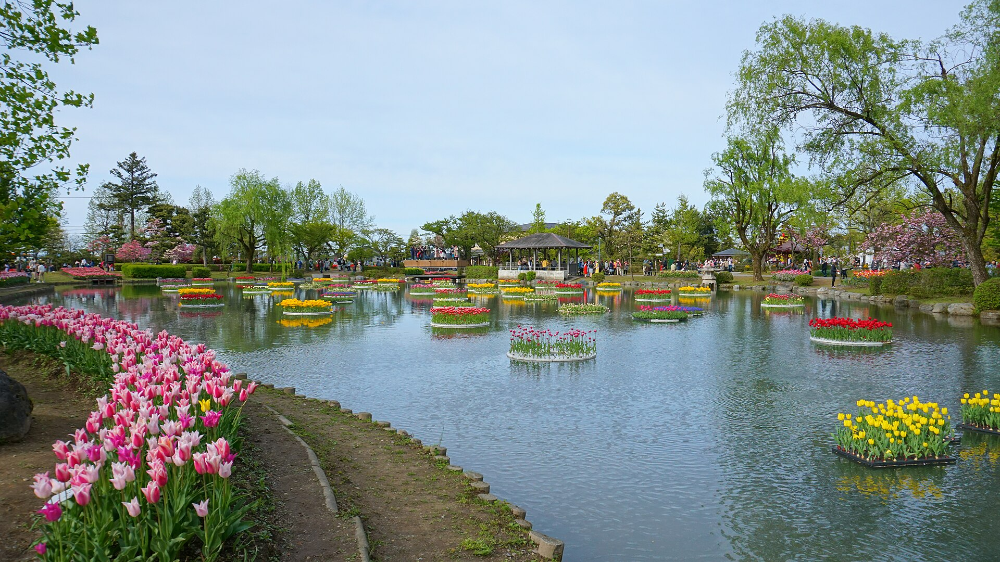

1박 · 11/5
단체 숙박
머큐어 도야마 토나미 리조트&스파
メルキュール富山砺波リゾート＆スパ · Accor Mercure
후시키고교 방문 전날 토나미 고원 리조트에서 단체 숙박합니다. 온천·스파·전망 노천탕을 갖춘 리조트형 호텔로, 대형버스 단체 체크인에 적합합니다.
주소 富山県砺波市安川字天皇330
전화 0763-37-2000
GPS 36.61489, 137.01703
입실/퇴실 15:00 / 11:00 (현지 기준)
시설 온천·노천탕·사우나·레스토랑
식사 2일차 조식 호텔